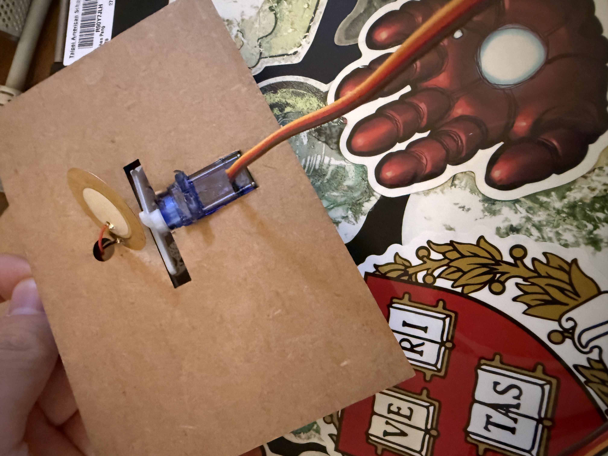
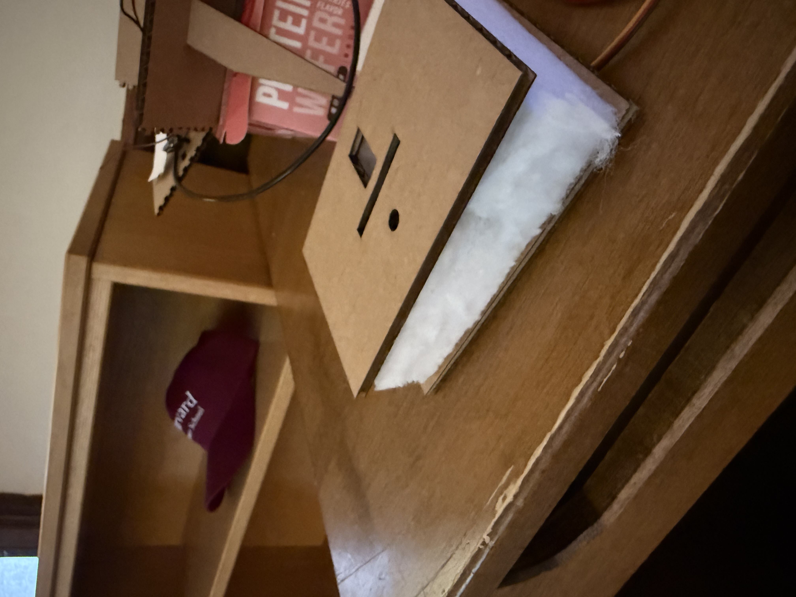

<div class="textcontainer">
<p class="margin"> </p>
<h3>Week 7: Electronic Outputs</h3>
<h4>Assignment: Minimum Viable Product for Final Project</h4>
<img style = "width: 35%" src="mvpgif1.gif">
<h5></h5>
My final project will be an attachment onto the bottom of your shoe that gives you a boost while you are running. The simplest version of this is a simple touch sensor (piezo disc) and a servo that moves back and forth when contact is detected.
<h6></h6>


<h7></h7>
I lasercut a base that holds the disc and the servo. I then cut out a piece of foam, and hollowed out the middle to hold the wiring. The casing of my final project will probably be similar but with mmore durable materials. I will probably be using carbon fiber plates and some more durable foam.
<h8></h8>
<img style = "width: 35%" src="mvpgif2.gif">
<h9></h9>
<h10></h10>
The main issue that I faced is that the sensor wasn't able to distinguish between "running" from "walking" and "standing still". As shown in the gif above, the movement from the servo sort of feeds back into the touch sensor, causing the mechanism to move perpetually when put face down. Here will be my next steps forward: 1. Try to find a threshold to distinguish walking/running etc, or use a high pressure pressure sensor. 2. Use a strong piston instead of a servo, maybe an air piston of some sort. 3. More solid casing overall.
</div>